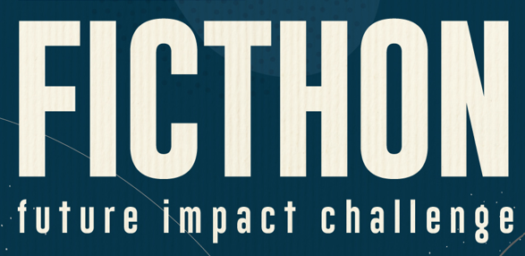

Exemplo: Desastre no Rio Grande do Sul - Análise dos impactos e lições aprendidas.
Exemplo: Desastre em Petrópolis/RJ - Impactos e medidas emergenciais adotadas.
Veja como o Pharos reúne tecnologia e inovação para oferecer soluções rápidas e seguras em situações de emergência.
"Com o Pharos, senti-me seguro e informado durante uma situação crítica. A interface intuitiva facilitou muito o acesso às informações."
"Um aplicativo que realmente faz a diferença para pessoas que precisam de ajuda rápida e confiável."
Nosso objetivo é ampliar o alcance do Pharos para salvar vidas. Estimativas indicam que nossa tecnologia pode auxiliar milhares de pessoas durante desastres naturais, proporcionando uma comunicação eficaz e serviços de emergência integrados.
| Critério | Pharos | Concorrentes |
|---|---|---|
| Atualização em tempo real | ✔️ | ❌ |
| Interface intuitiva | ✔️ | Variável |
| Integração com órgãos oficiais | ✔️ | Parcial |
| Suporte a emergências | ✔️ | Limitações |
Responsável pelo desenvolvimento front-end e design.
Responsável pelo back-end e integrações com APIs.
Gestão de projetos e estratégias de comunicação.